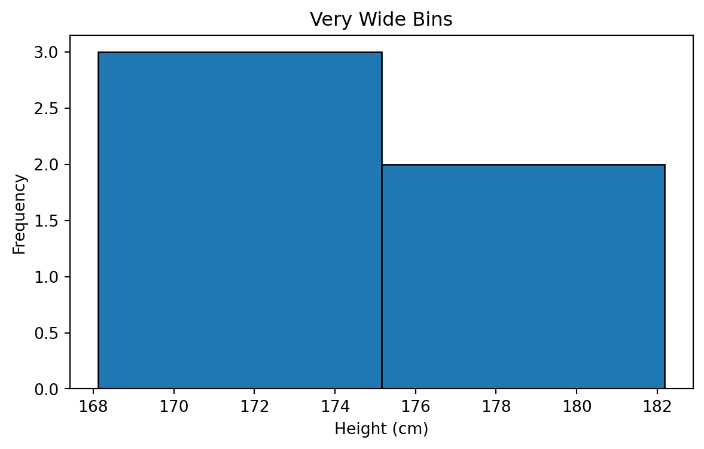
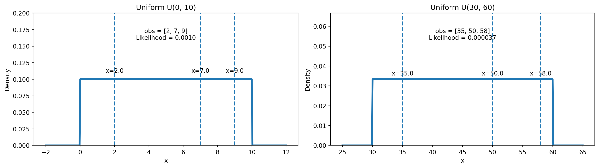
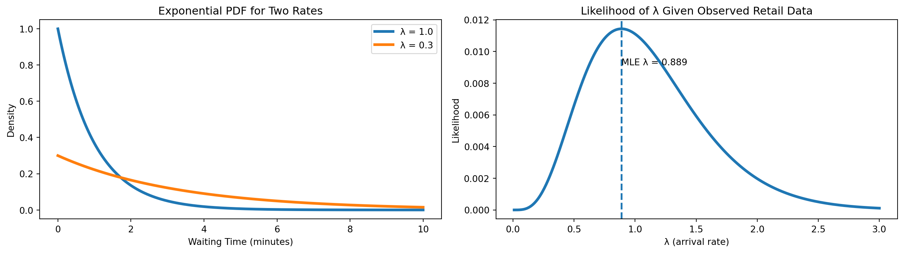

[174, 169, 175, 182, 168]Statistics Session 03: Probabilistic Distributions
Continues Distributions
statistics
Topics
- Probabilistic Distributions
- Continuous Distributions
- Normal Distribution
- Uniform Distribution
- Exponential Distribution
What Is a Probabilistic Distributions
In Data Analytics, we rarely know outcomes with certainty.
Instead of saying:
“Tomorrow’s sales will be exactly 120 units”
We say:
“Sales will most likely be around 120, but could reasonably vary”
A probabilistic distribution is a formal way to describe this uncertainty by answering to the below three questions:
- What values can a variable take?
- How likely is each value (or range of values)?
- How is uncertainty spread across those values?
From Raw Data to Distribution
When we observe data repeatedly:
- Customer purchases
- Session durations
- Delivery times
Patterns emerge.
A distribution is a model that summarizes those patterns instead of listing every observation.
Random Variables
A random variable is a numerical description of an uncertain outcome.
Examples:
- Number of purchases today
- Time (in minutes) until a customer churns
- Whether a user clicks an ad (1 or 0)
From the above example we could notice that the Random Variable could be
- Discrete: take counts ,
yes/nooutcomes- Number of compaints per day
- Number of items sold
- Email opened or not
- etc..
- Continuous: measured not counted
- Revenue
- Time
- Weight
- Distance
- etc..
Well-Known Distributions

Continues Distribution
Many real-world business variables are measured: Revenue, Time, Cost, Duration, Distances etc..
A distribution is continuous if:
- The variable can take any real value in a range
- There are infinitely many possible values
- Exact values are not meaningful on their own
ImportantRemember
For a continuous random variable \(X\):
\[ P(X = x) = 0 \]
This is not a mistake.
Probability only makes sense over intervals:
\[ P(a \le X \le b) \]
To understand a Continuous probability distribution, we start with a simple experiment:
We go outside and measure people’s heights, one person at a time. Assume the true average height in the population is around 170 cm.
We begin with just a few measurements and gradually build the distribution.
The heights of the first 5 People:
Histogram with 5 People

Wider Bins

Narrower Bins

Increasing Sample Size to 300

Probability Density Function (PDF)
Continuous distributions are described by a Probability Density Function (PDF).
The PDF:
- Is always non-negative
- Integrates to 1 over its entire range
- Describes how “dense” probability is around a value
Mathematically:
Imagine as calculating the area under the curves!
\[ \int_{-\infty}^{\infty} f(x)\,dx = 1 \]
Important
- A higher PDF value means: Values around that point are more likely
- It does not mean: The probability at that exact point is higher
Expected Value (Mean)
The expected value represents the long-run average outcome.
For a continuous distribution:
\[ E[X] = \int_{-\infty}^{\infty} x f(x)\,dx \]
TipBusiness Interpretation
Expected value answers:
“If we repeated this process many times, what average outcome should we expect?”
Variance
Variance measures spread or uncertainty around the mean.
For a continuous distribution:
\[ Var(X) = \int_{-\infty}^{\infty} (x - \mu)^2 f(x)\,dx \]
where \(\mu = E[X]\).
TipBusiness Interpretation
- Low variance → predictable outcomes
- High variance → risky or unstable outcomes
Why Continuous Distributions Are Powerful in Analytics
They allow us to:
- Model natural variability
- Estimate probabilities over ranges
- Build confidence intervals
- Perform forecasting and optimization
Continuous Distributions in Practice
In this course, we focus on:
- Normal Distribution
- Uniform Distribution
- Exponential Distribution
Normal Distribution
As the sample size increased and bins became finer, the histogram began to resemble a smooth, symmetric, bell-shaped curve. This shape corresponds to the Normal Distribution.
A Normal Distribution is a continuous distribution that is:
- Symmetric around its mean
- Bell-shaped
- Fully described by two parameters
- Mean \(\mu\)
- Variance \(\sigma^2\)
- Mean \(\mu\)
It is denoted as:
\[ X \sim \mathcal{N}(\mu, \sigma^2) \]

Probability Density Function
\[ f(x) = \frac{1}{\sigma \sqrt{2\pi}} \exp\!\left( -\,\frac{(x - \mu)^2}{2\sigma^2} \right) \]
- \(f(x)\) gives the probability density at value \(x\). It describes how concentrated the distribution is around that point.
- \(\mu\) is the mean.
- \(\sigma\) is the standard deviation.
- small \(\sigma\) makes the curve narrow and tall,
- large \(\sigma\) makes it wide and flat.
- small \(\sigma\) makes the curve narrow and tall,
The term \(\frac{1}{\sigma \sqrt{2\pi}}\) ensures that the total area under the curve equals 1, as required for any probability distribution.
Expecteed Value
For a normal random variable \(X \sim \mathcal{N}(\mu, \sigma^2)\):
\[ E[X] = \mu \]
TipBusiness Interpretation
The expected value represents the typical or average outcome.
Examples:
- Average customer height
- Average daily revenue
- Average delivery time
Variance of the Normal Distribution
For a normal random variable:
\[ Var(X) = \sigma^2 \]
TipBusiness Interpretation
Variance controls spread:
- Small \(\sigma^2\) → values tightly clustered around the mean
- Large \(\sigma^2\) → values widely spread and more uncertain
Two Normal Distributions

Spreadsheet Demostration
- Generation:
=NORM.INV(RAND(),170,8) - Mean:
=AVERAGE(range) - Standard Deviation:
=STDEV.P(range) - Variance:
=VAR.P(range) - PDF:
=NORM.DIST(x, mean, std, FALSE) - Cumulative Probability CDF:
=NORM.DIST(x, mean, std, TRUE)
Tip
Checkout the Normal Distribtion on practice here
Standard Normal Distribution
The Standard Normal Distribution is a special case of the normal distribution where:
\[ \mu = 0 \quad \text{and} \quad \sigma = 1 \]
It is denoted as:
\[ Z \sim \mathcal{N}(0,1) \]
Any normal random variable \(X \sim \mathcal{N}(\mu, \sigma^2)\) can be transformed into a standard normal variable using standardization:
\[ Z = \frac{X - \mu}{\sigma} \]
NoteRecall
Standardization allows us to:
- Compare values measured on different scales
- Compute probabilities using a single reference distribution
- Interpret how many standard deviations a value is from the mean
Normal vs Gaussian Distribution
The Normal Distribution and the Gaussian Distribution are the same thing.
They are two names for the same mathematical distribution.
Gaussianis the name used in mathematics and physics, after Carl Friedrich Gauss
Normalis the name commonly used in statistics and data analytics
Both refer to the distribution defined by the PDF:
\[ f(x) = \frac{1}{\sqrt{2\pi\sigma^2}} \exp\left( -\frac{(x-\mu)^2}{2\sigma^2} \right) \]
They are completely interchangeable terms.
Uniform Distribution
The Uniform Distribution models situations where all values within a range are equally likely.
There is:
- No center
- No peak
- No value more likely than another
Imagine the following situations:
- A random number generator picks a number between 0 and 1
- A customer arrives at a store at a random time between 09:00 and 10:00
- A system assigns users randomly to time slots between 0 and 30 minutes
In all these cases:
Every value in the interval is equally likely
Another example:
Imagine a telecom system that assigns a customer to one of several identical support bots randomly.
The system waits somewhere between 0 and 10 seconds before routing the customer, and every value in that interval is equally likely.
This kind of process has no preference:
- not more likely to assign earlier,
- not more likely to assign later.
Definition
A Uniform Distribution on the interval \([a, b]\) is denoted as:
\[ X \sim \text{Uniform}(a, b) \]
where:
- \(a\) is the minimum possible value
- \(b\) is the maximum possible value
Probability Density Function (PDF)
If \(X \sim U(a,b)\), then:
\[ f(x) = \frac{1}{b - a}, \quad a \le x \le b \]
- \(f(x)=0\) outside the interval
- \([a,b]\) is equally likely.
Suppose we observe a sample \(x_1, x_2, \dots, x_n\) from a uniform distribution \(U(a,b)\).
The likelihood of the parameters \((a,b)\) given the data is:
\[ L(a,b \mid x_1,\dots,x_n)=\prod_{i=1}^n f(x_i) \]
Because the PDF is constant inside the interval:
- If all observations lie in \([a,b]\):
\[ L(a,b \mid x_1,\dots,x_n)=\left(\frac{1}{b-a}\right)^n \]
- If any observation lies outside \([a,b]\):
\[ L(a,b \mid x_1,\dots,x_n)=0 \]
So uniform likelihood is simple: constant if all points are inside, zero otherwise.
Visualizing Uniform Distribution

ImportantImportant Interpretation
Because the PDF is flat:
- No value inside \([a,b]\) is more likely than another
- Probability depends only on interval length, not position
Expected Value (Mean)
For a uniform random variable \(X \sim \text{Uniform}(a,b)\):
\[ E[X] = \frac{a + b}{2} \]
Expected Value (Mean)
TipBusiness Interpretation
The expected value is simply the midpoint of the interval.
Example:
If arrival time is uniformly distributed between 0 and 60 minutes,
the average arrival time is 30 minutes.
Variance
For a uniform distribution:
\[ Var(X) = \frac{(b - a)^2}{12} \]
TipBusiness Interpretation
Wider interval → higher uncertainty
Narrow interval → more predictable outcomes
If \(X \sim \text{Uniform}(0, 10)\):
\[ P(2 \le X \le 5) = \frac{5 - 2}{10 - 0} = 0.3 \]
Business Applications of the Uniform Distribution
Uniform distributions are used when:
Random assignment is required
No prior preference exists
Examples:
A/B testing randomization
Load balancing
Simulation baselines
Random sampling assumptions
Probability as Area
Because the density is constant:
\[ P(c \le X \le d) = \frac{d - c}{b - a} \]
This is simply the fraction of the interval covered.
Spreadsheet Demonstration (Uniform Distribution)
- Generate Uniform Data:
=RAND()*(b-a)+a- Example for \([0,10]\):
=RAND()*10
- Example for \([0,10]\):
- Expected Value:
=(a+b)/2 - Variance:
=(b-a)^2/12 - Probability Between Two Values \(c\) and \(d\):
=(d-c)/(b-a)
Important
The uniform distribution assumes:
- No structure
- No memory
- No preferred values
Exponential Distribution
We now move to a continuous distribution that models waiting time until an event occurs.
This distribution is fundamentally different from Normal and Uniform distributions because:
- It is not symmetric
- It is right-skewed
- It explicitly models time-to-event behavior
Consider a supermarket or retail chain.
Customers arrive at the checkout lanes randomly, and the store wants to model:
How long until the next customer arrives at the counter?
If arrivals are independent and have no memory, then the waiting time** between customer arrivals follows an Exponential distribution.**
- if you’ve been waiting 4 minutes already, the next customer is not
due - every moment is a fresh start
- the past does NOT influence the future (Markov Chain)
This is very common in retail analytics:
- time until next customer walks into the store,
- time until next person reaches a self-checkout station,
- time until next event in an online store: purchase, add-to-cart, click, etc.
All of these waiting times are modeled by the Exponential distribution.
Definition
A random variable \(X\) follows an Exponential Distribution if:
\[ X \sim \text{Exp}(\lambda) \]
where:
\(\lambda > 0\) is the arrival rate (events per unit time)
\(\frac{1}{\lambda}\) is the average waiting time
Probability Density Function (PDF)
If \(X \sim \text{Exp}(\lambda)\):
\[ f(x) = \lambda e^{-\lambda x}, \quad x \ge 0 \]
Where:
- \(\lambda\) = customer arrival rate (customers per minute)
- \(1/\lambda\) = average waiting time
Expected Value (Mean)
\[ E[X] = \frac{1}{\lambda} \]
TipBusiness Interpretation
If customers arrive at a rate of: \(\lambda = 2\) customers per minute then the expected waiting time is: \(1/2 = 0.5\) minutes
Variance
\[ Var(X) = \frac{1}{\lambda^2} \]
TipBusiness Interpretation
- High arrival rate → lower variability
- Low arrival rate → higher uncertainty in waiting times
Likelihood for Observed Retail Data
Suppose we measure actual waiting times between customer arrivals:
\[ x_1, x_2, \dots, x_n \]
The likelihood of \(\lambda\) given the data is:
\[ L(\lambda) = \prod_{i=1}^n \lambda e^{-\lambda x_i} \]
This simplifies to:
\[ L(\lambda) = \lambda^n \exp\!\left(-\lambda \sum_{i=1}^n x_i\right) \]
Log-likelihood:
\[ \ell(\lambda) = n \ln(\lambda) - \lambda \sum x_i \]
Maximum Likelihood Estimate (MLE):
\[ \hat{\lambda} = \frac{n}{\sum x_i} \]
Interpretation:
- fast arrivals → large \(\lambda\)
- slow arrivals → small \(\lambda\)
Just like checkout traffic in a retail store.
Visualization
We use example waiting times in minutes: obs = [1.2, 0.5, 2.0, 0.8]
These could be times between customers reaching a checkout lane.
- Left plot → PDF comparison for \(\lambda = 1\) and \(\lambda = 0.3\)
- Right plot → Likelihood curve for the observed retail dat

Interpretation
- When customers arrive quickly and consistently, the waiting times shrink → the likelihood favors a large \(\lambda\).
- When customers arrive sporadically or slowly, the waiting times grow → the likelihood favors a small \(\lambda\).
In our observed data:
- Average waiting time = \(4.5 / 4 = 1.125\) minutes
- MLE: \(\hat{\lambda} = 4/4.5 = 0.889\) customers/minute
Meaning:
- the best-fitting model suggests approximately 0.89 customers per minute,
- which corresponds to one customer roughly every 1.1 minutes.
This type of analysis is central in retail analytics for understanding staffing requirements, managing checkout lanes, predicting peak hours, and optimizing store operations.
Spreadsheet Demonstration (Exponential Distribution)
- Generate exponential data:
=-LN(1-RAND())/lambda - Expected value:
=1/lambda - Variance:
=1/(lambda^2) - CDF (event occurs within x):
=1-EXP(-lambda*x)